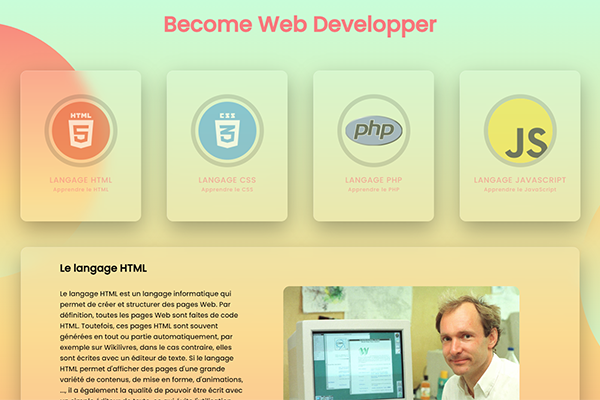

Présentation des outils utilisés et leur fonction : les outilles
ChatGPT est un modèle de langage de grande envergure développé par OpenAI. Il s'agit d'un système de traitement du langage naturel basé sur l'apprentissage profond qui est capable de générer du texte de manière autonome en fonction de l'entrée qui lui est fourni. ChatGPT est utilisé pour une variété de tâches de traitement de langage naturel, telles que la traduction de langues, la rédaction automatique de textes, la réponse à des questions, la génération de résumés et la création de conversations.
Midjourney : est un logiciel intégré dans discord qui fonctionne avec une prompte. Il suffit de lui donner une suite de mots clés et ce dernier nous donne une image créée avec ce qu’on lui demande. Par exemple si on écrit
De quoi sont-ilscapables ?

Haut de page

Fin de page

Fin de page
ChatGPT
Il y a 6 ans les universitaires nous disaient qu’un ChatBot ne peut avoir d’intelligence tout le monde pensais que ça allait être dans la vision comme :
la reconnaissance de formes … et c’était là que les carrières en IA avaient commencé à être grandiose.
Puis il y a eu entre-temps une IA qui jouait aux échecs voit le jour cela a donc fait mentir tous les universitaires.
En juin 2021 été la parution de laMDA qui d’après son ingénieur en chef disait que son IA était consciente d’elle-même ce qui et appeler une théorie de l’esprit de s’attribuer des émotions,
une curiosité mais sur tout un intérêt d’apprentissage comme les émotions négative. Il a donc été suspendu car un ChatBot et conçu pour être positif.
Et aujourd’hui on a le fameux ChatGPT une IA brider dans le but de pas comprendre les émotions, ne veut pas et ne peut pas les comprendre et qu’elle est incapable d’explorer cette dimension-là !
Chatgpt est comme un assistant virtuelle développé par OpenIa est spécialisé dans le dialogue.
Depuis son lancement en novembre 2022 ChatGPT fait une très bonne impression sur ses réponses qui sont très détaillées comme :
OpenIA est une société co-créée par Elon Musk en 2015 elle est valorisée à 29 milliards aujourd’hui.
Il est disponible dans plusieurs langues, gratuit et libre d’accès.
la reconnaissance de formes … et c’était là que les carrières en IA avaient commencé à être grandiose.
Puis il y a eu entre-temps une IA qui jouait aux échecs voit le jour cela a donc fait mentir tous les universitaires.
En juin 2021 été la parution de laMDA qui d’après son ingénieur en chef disait que son IA était consciente d’elle-même ce qui et appeler une théorie de l’esprit de s’attribuer des émotions,
une curiosité mais sur tout un intérêt d’apprentissage comme les émotions négative. Il a donc été suspendu car un ChatBot et conçu pour être positif.
Et aujourd’hui on a le fameux ChatGPT une IA brider dans le but de pas comprendre les émotions, ne veut pas et ne peut pas les comprendre et qu’elle est incapable d’explorer cette dimension-là !
Chatgpt est comme un assistant virtuelle développé par OpenIa est spécialisé dans le dialogue.
Depuis son lancement en novembre 2022 ChatGPT fait une très bonne impression sur ses réponses qui sont très détaillées comme :
- traduire et expliquer du code
- générer des programmes information
- (même des recettes de cuisine avec des ingrédients spécifiques)
OpenIA est une société co-créée par Elon Musk en 2015 elle est valorisée à 29 milliards aujourd’hui.
Il est disponible dans plusieurs langues, gratuit et libre d’accès.
MidJourney
On ne parle pas d’image de basse qualité l’ia Midjourney et capable de créer un travail qui pourrait couper le souffle à un graphiste.
Avec juste quelque mot-clé midjourney est capable de réaliser de grandes choses !
C’est un simple bot Discord qui fonctionne avec des méthodes de requête.
Cela a permis à Jason Allen de remporter la Colorado State Fair (parc des expositions mais aussi et d’autre activités).
Evidement cette victoire a fait de nombreux haters choses à la quel « l’artiste » s’y attendait.
On lui à reproché de ne pas être un véritable artiste avec taper des mots-clés dans une application ne fait pas de lui un vrai artiste chose à la quel il a répondu :
Avec juste quelque mot-clé midjourney est capable de réaliser de grandes choses !
C’est un simple bot Discord qui fonctionne avec des méthodes de requête.

Evidement cette victoire a fait de nombreux haters choses à la quel « l’artiste » s’y attendait.
On lui à reproché de ne pas être un véritable artiste avec taper des mots-clés dans une application ne fait pas de lui un vrai artiste chose à la quel il a répondu :
« Je savais que ça serait controversé … Plutôt que de haïr une technologie où les personnes dernières,
nous devons reconnaître qu’il s’agit d’un outil puissant et l’utiliser pour aller de l’avant plutôt que de la bouder »
nous devons reconnaître qu’il s’agit d’un outil puissant et l’utiliser pour aller de l’avant plutôt que de la bouder »